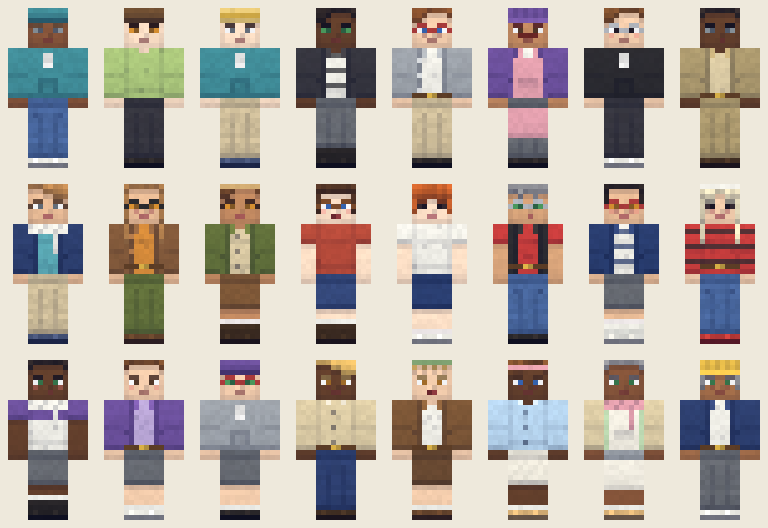

スキン一覧
村人の見た目は、ふだんは下の 200 枚のどれかです（名前から決まるので、同じ人はいつも同じスキン）。プロフィールで見た目を選んだ人は、その見た目になります。すべてスクリプトで組み合わせて作ったものです。
見た目を作る
村人の番号（シード）から、肌・髪・目・服・帽子が決まります。体の種類を選んで「別のを引く」で見くらべられます。ログインした村人は、自分のページで気に入った見た目に決められます。
見本 24 体（男性・女性・指定なし を 8 体ずつ）

村人の見た目は、ふだんは下の 200 枚のどれかです（名前から決まるので、同じ人はいつも同じスキン）。プロフィールで見た目を選んだ人は、その見た目になります。すべてスクリプトで組み合わせて作ったものです。
村人の番号（シード）から、肌・髪・目・服・帽子が決まります。体の種類を選んで「別のを引く」で見くらべられます。ログインした村人は、自分のページで気に入った見た目に決められます。
